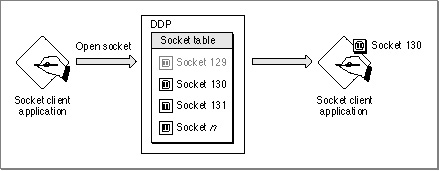

Legacy Document
Important: The information in this document is obsolete and should not be used for new development.
Important: The information in this document is obsolete and should not be used for new development.


Assigning Socket Numbers
DDP maintains two classes of sockets: sockets that are assigned statically and sockets that are assigned dynamically. There are some restrictions on which socket numbers
they use:
To use a statically assigned socket, an application must request a specific socket number. In most cases, you should not use statically assigned sockets.
- Statically assigned sockets have numbers in the range of 1-127.
- Socket numbers 1-63 are reserved for use by Apple Computer, Inc.
- Socket numbers 64-127 are available for program development.
- Dynamically assigned sockets have numbers within the range of 128-254.
DDP maintains a pool of available sockets from which it selects a socket number to assign dynamically for your use when you call DDP to open a socket and you do not specify a number within the range of statically assigned sockets.
- IMPORTANT
- Although you can use statically assigned sockets whose numbers fall within the range of 64-127 for program development, you must not
use a statically assigned socket number for a released product. To do
so creates the possibility of conflicts arising, for example, when two applications that both use the same statically assigned socket are open on the same node at the same time. Data intended for one application could be delivered to the other application, and vice versa.
Figure 7-3 illustrates conceptually what happens when an application calls DDP to open and assign a socket dynamically. In this example, DDP assigns socket number 130
to the application that requests a socket. (Socket number 129 is already assigned to
an application.)
To let DDP choose a socket number from the pool of available sockets within the range of dynamically assigned sockets, you specify 0 for the socket number. However, you can choose a specific socket within that range and pass the number of that socket to DDP
to open. If that socket is available, DDP opens it, assigns it to your application, and associates your socket listener with it. If the socket number you specify is not available, DDP returns an error result.